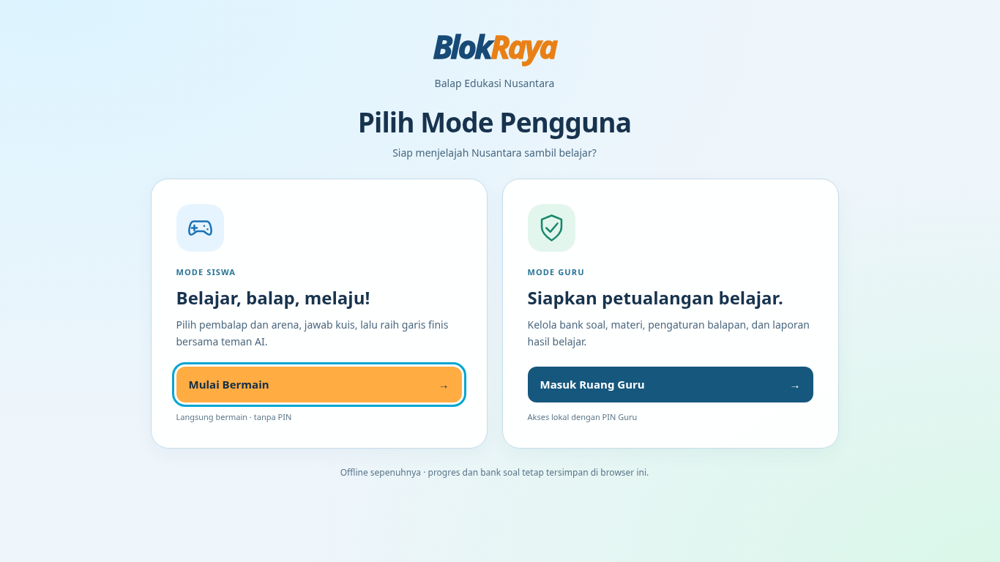
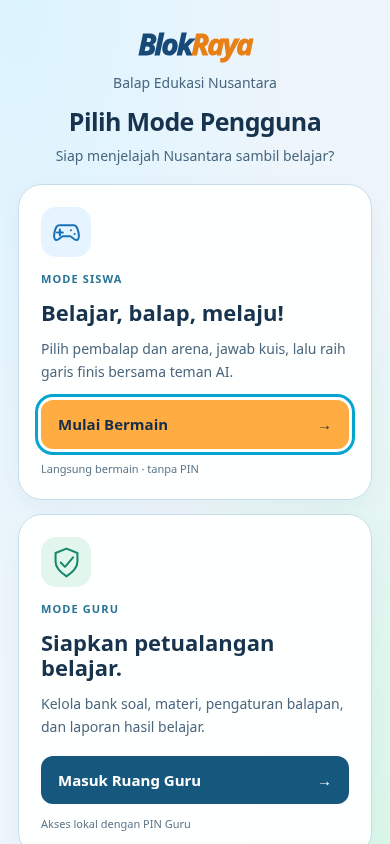

Screenshot UI/game sebenarnya. Poster asli tertanam, tanpa gambar generatif. Native fullscreen diuji pada Chromium; API tidak tersedia/ditolak memakai fixture eksplisit. HTML · Laporan
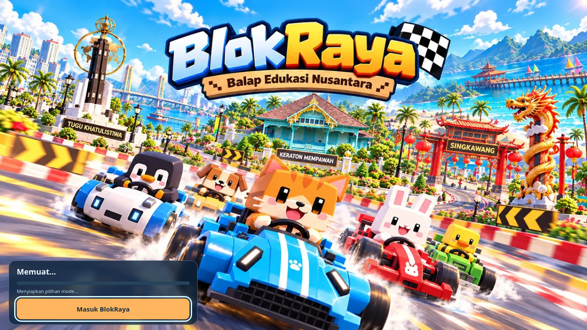
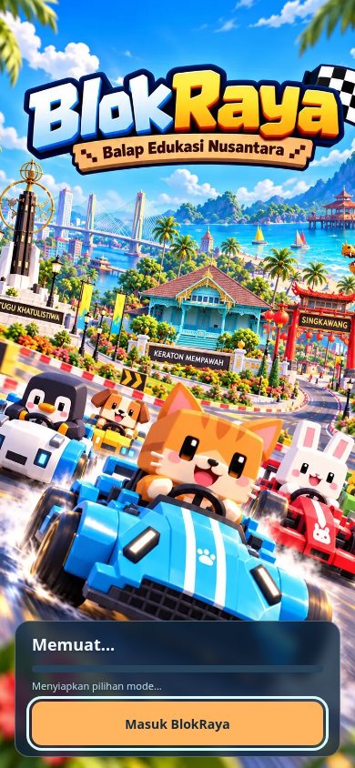
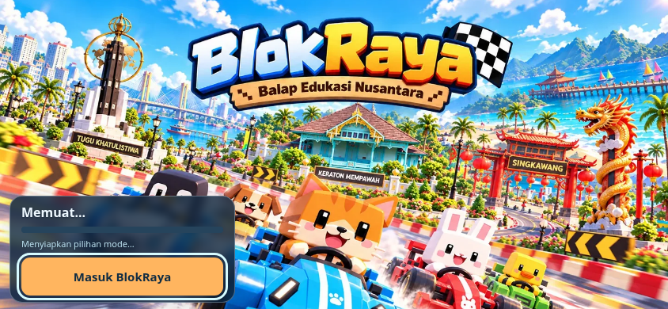
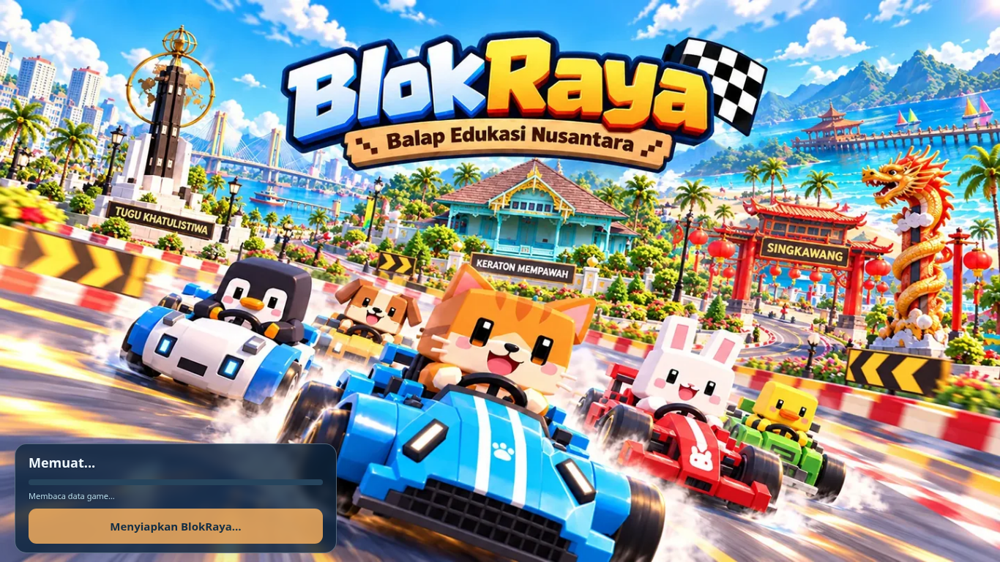

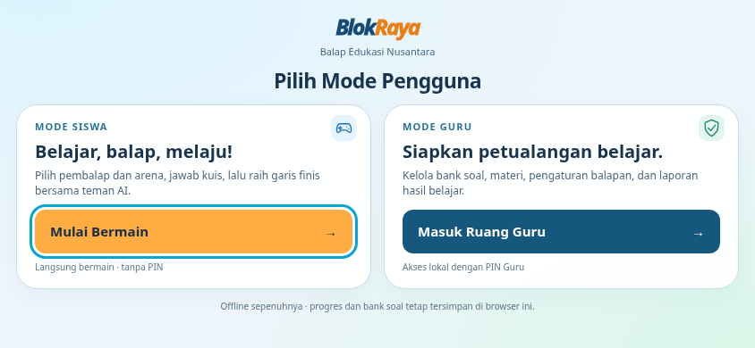
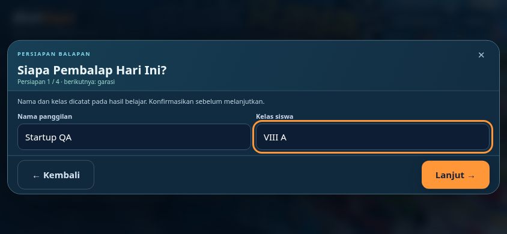
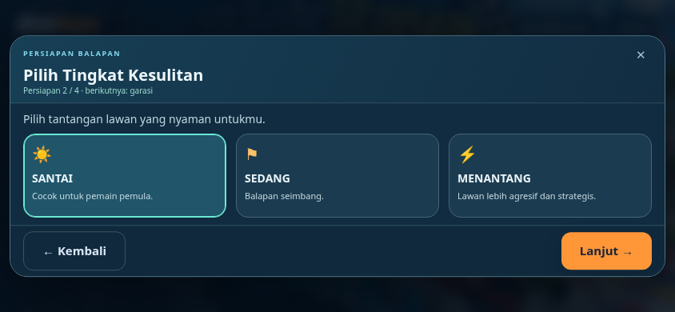
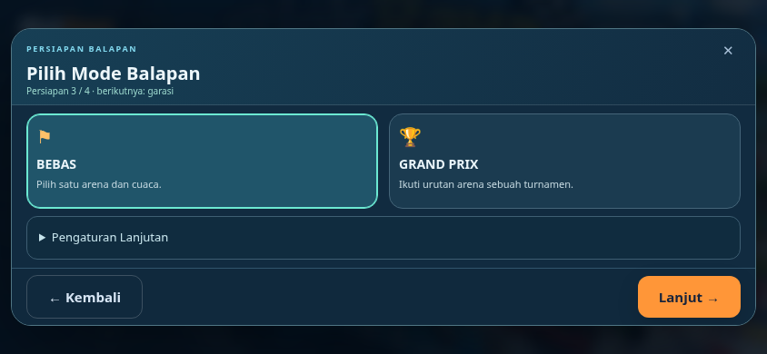
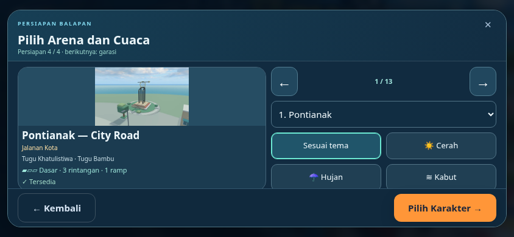
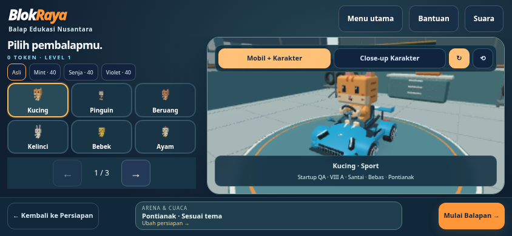
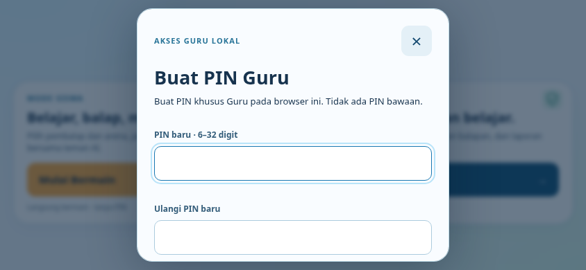
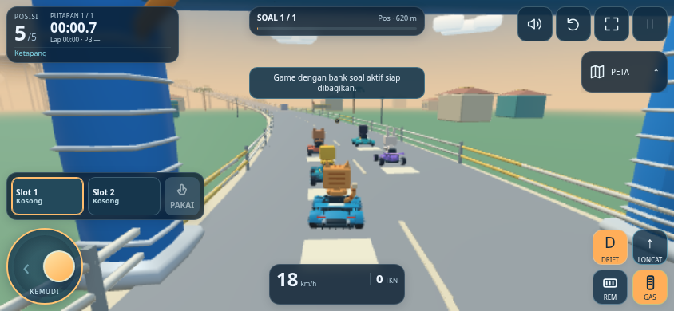
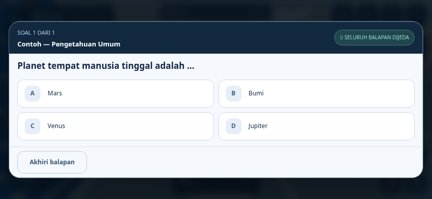
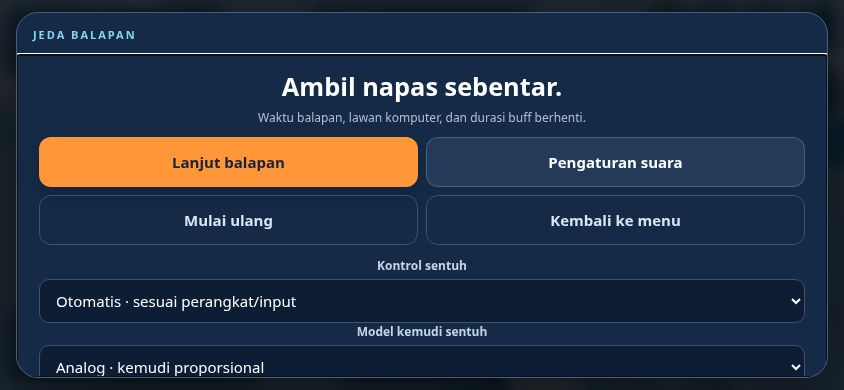
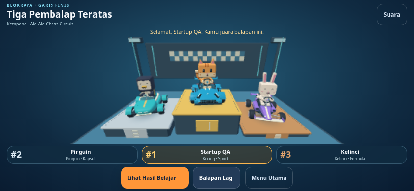
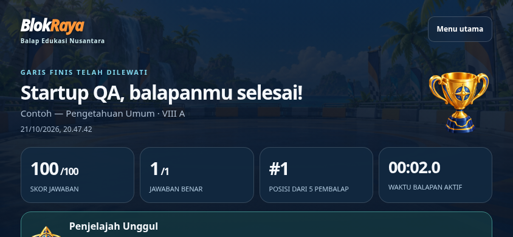